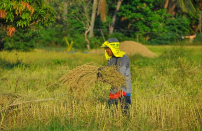

أهم الاخبار
إعفاء المتعثرين من سداد فوائد وغرامات تأخير سداد الأقساط المستحقة.
٢٤ مارس ٢٠٢١وﻫﻮ اﻟﻤﺸﺮﻮع اﻟﺬي ﻳﺴﺘﻬﺪف ﻧﻘﻞ ﻣﻘﺮ اﻟﺤﻜﻮﻣﺔ إﻟﻰ ﻣﺒﺎن ﻋﺼﺮﻳﺔ ﺣﺪﻳﺜﺔ, ﻓﻲ اﻟﻘﻠﺐ ﻣﻨﻬﺎ ﻣﺸﺮﻮع إﻧﺸﺎء اﻟﻌﺎﺻﻤﺔ اﻟﺈدﺍﺭﻳﺔ اﻟﺠﺪﻳﺪة،الدكتور ... البلد الذي يبلغ عدد سكانه 103 ملايين نسمة يشهد طفرة استعراض
٢٤ مارس ٢٠٢١
رئيس هيئة التعمير والتنمية الزراعية : توجيهات الرئيس كانت إحداث تنمية كاملة.
 ٢٤ مارس ٢٠٢١
٢٤ مارس ٢٠٢١
إعفاء المتعثرين من سداد فوائد وغرامات تأخير سداد الأقساط المستحقة.

٢٤ مارس ٢٠٢١